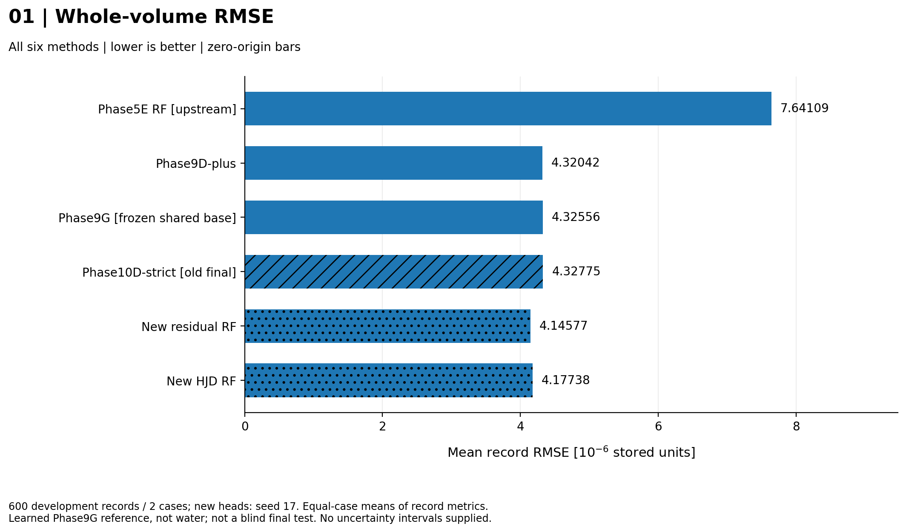
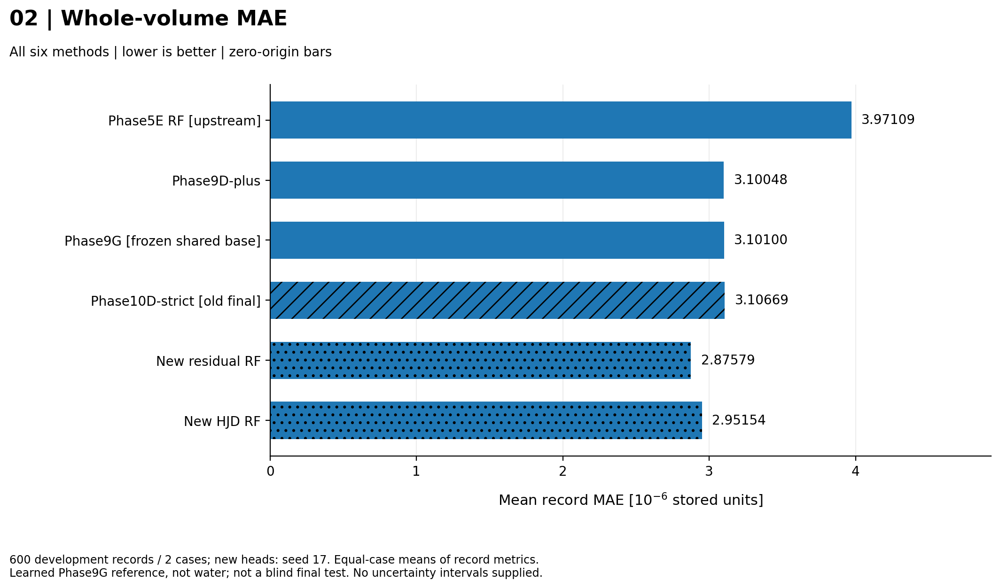
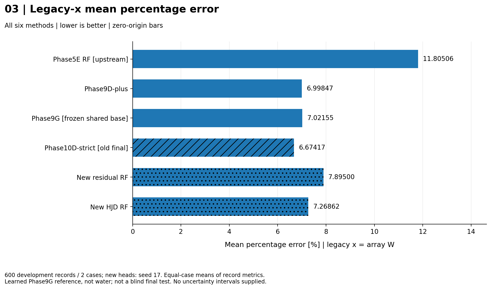
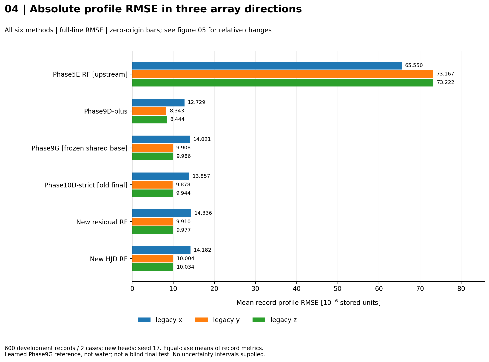
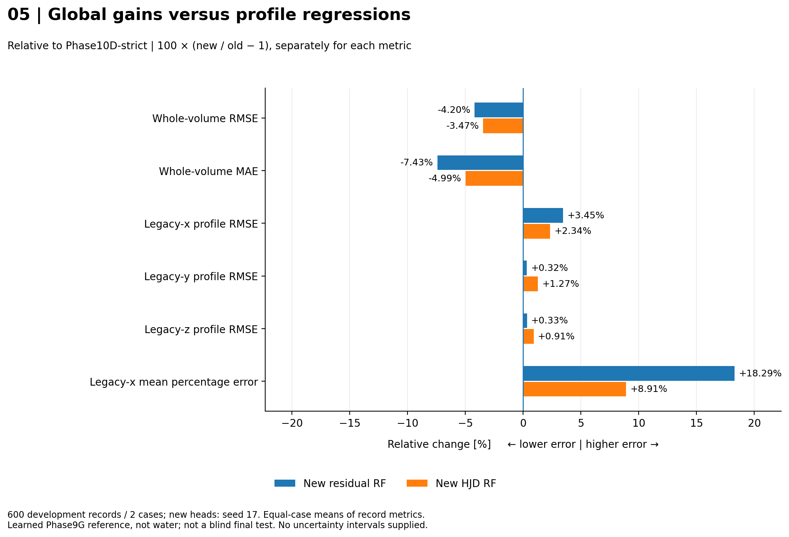
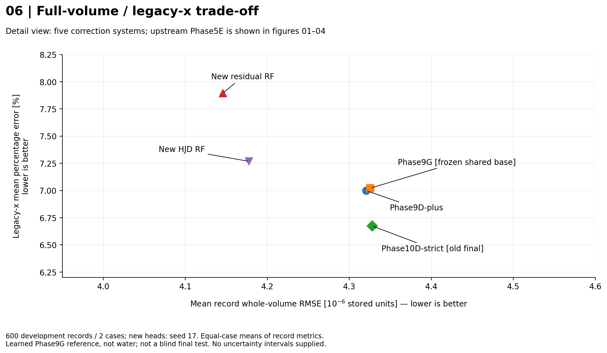
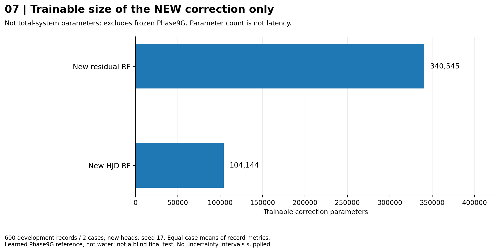

Frozen V1: global / profile comparison
600 records, 2 development cases, one new-model seed. Learned Phase9G reference, NOT water. No blind final-test or clinical claim. Aggregate inputs only; no new inference.
Input provenance: user_reported_aggregate. Parameters are correction-only. Negative relative change means lower error, not statistical significance.
Whole-volume RMSE

All six saved methods, in fixed lineage order; bars begin at zero. Values are means of record RMSEs, not one pooled RMSE.
Whole-volume MAE

All six saved methods, same order and zero origin. Scaling by 10^6 is display only, not a conversion to Gy.
Legacy-x percentage error

Mean local percentage error on the original GT-peak profile. The original evaluator keeps positions at least 1% of that GT line peak. Not an independently verified physical beam axis.
Absolute profile RMSE

Whole-line absolute errors, one grouped figure for x/y/z. Legacy x=W, y=H, z=D. The large upstream RF bar is retained; figure 05 resolves smaller relative differences.
Changes relative to Phase10D-strict

100*(new/Phase10D-1), computed separately for each metric. Negative means lower error; positive means higher error. These are relative percentages, NOT percentage-point differences and NOT a combined score.
Global/profile trade-off

Detail view of five correction systems; the upstream Phase5E is excluded from this detail view only and remains in figures 01-04. Both axes are errors: lower left is better. Axes are zoomed and labeled. No connecting curve, significance claim, or Pareto guarantee.
New correction-network size

Only the two newly trained correction networks. Counts come from the user-supplied resource table, not from timing. Shared upstream weights and runtime/particle costs are excluded; fewer parameters does not prove faster inference.